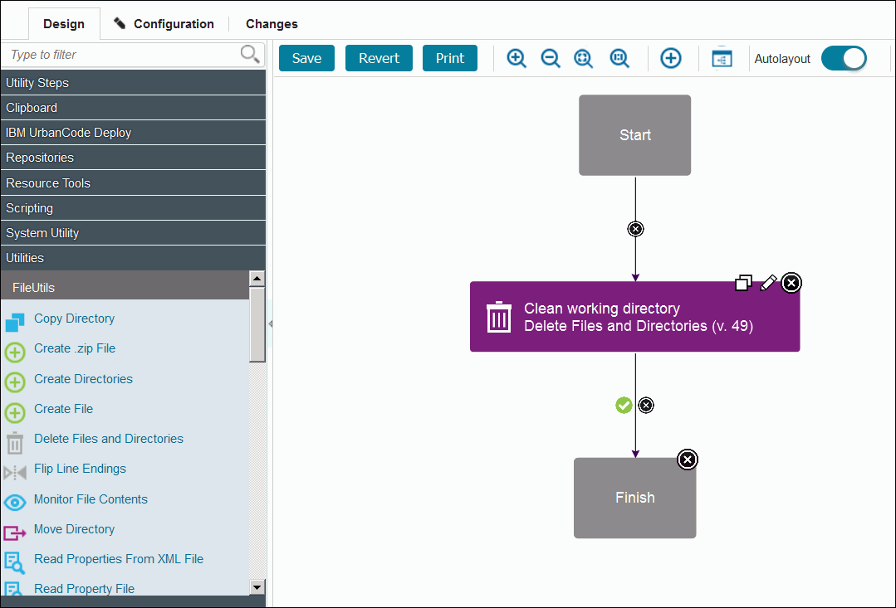
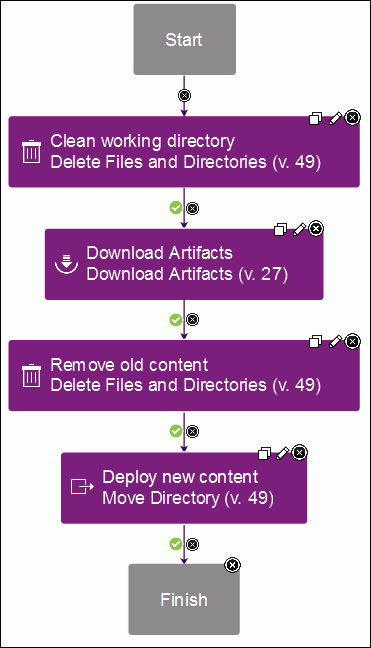
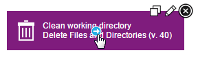
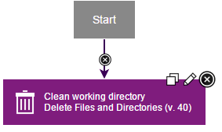
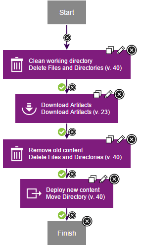
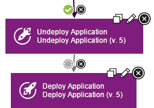
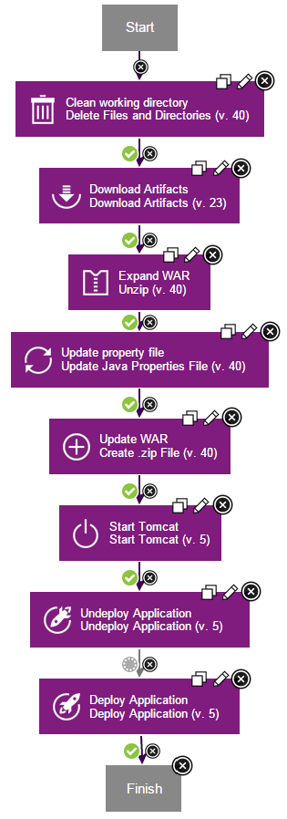
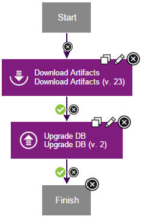

Lesson 2: Creating component processes
Component processes describe automated tasks that run on components. Component processes can deploy, install, uninstall, update, or run other tasks on a component.
There are three types of processes:
- Generic processes run outside the context of components or applications. Generic processes are shown on the top-level Processes tab. You can use generic processes in these instances, for example:
- In conjunction with a number of different component processes that do not fit well into a component template
- When you want to run processes that directly affect HCL® UrbanCode™ Deploy agents that are unrelated to component, such as changing the agent configuration
- Application processes run within the context of applications. In many cases, application processes call component processes. For example, an application process can call the component processes that deploy their associated components.
- Component processes run tasks on a single component, such as deploying it, uninstalling it, or running configuration tasks on it.
Processes are lists of steps and connections between those steps. Each step is an individual command that runs on a target computer. Steps can manipulate files, run system commands, download files, and run programs. Plug-ins contribute most of these steps; plug-ins are available that work with many different types of software. For information about steps that are provided by plug-ins, see the documentation for the individual plug-in on IBM® developerWorks®: IBM UrbanCode™ Deploy Plug-ins.
Each component must have at least one component process to deploy or install the component. In this lesson, you create a deployment process for each of the three components. Later, you create an application process that calls these component processes to deploy each component.
Parent topic: Deploying a simple web application
Creating a component process for the web component
The component process for the web component downloads the most recent version of the component artifacts and puts those artifacts in the correct folder.
Follow these steps to create the component process that deploys the web component:
- On the Components tab, click the JPetStore-WEB component.
- Click Processes, and then click Create Process.
- In the Create Process window, specify the name to be Deploy web component.
- In the Process Type list, select Deployment. This list has other options for processes that uninstall or configure components.
- Accept the default values for the other properties, and click Save. The process opens in the process editor. This editor shows the steps in the process in a graphical form, as a flowchart. The Start and Finish boxes represent the beginning and the end of the process. From here, you add steps to the process and link them between the Start and Finish steps to show the order of the steps.
-
Add a step to clean any files out of the working directory. The process runs within a working directory. To ensure that you are using the most recent version of the files in the web component, run a command to clean the working directory:
- At the left of the process editor, in the step palette, expand Utilities. The step palette menu shows the available steps. You can explore the palette categories to find steps, or you can type in the search box at the top of the window.
- Under FileUtils, click and drag the Delete Files and Directories step to the process editor. The step is inserted between the Start and Finish steps. The inserted step is automatically connected to these steps Edit Properties window opens, showing the properties for the step. Some of these properties are unique to the step and others are the same for all steps.
- Click the Edit icon
 , and the Edit Properties window opens. In the Name field, specify the name to be Clean working directory.
, and the Edit Properties window opens. In the Name field, specify the name to be Clean working directory. - In the Base Directory field, specify a single period (
.). -
In the Include field, specify the following code:
**/* -
Accept the defaults for the other properties and then click OK. The new step is displayed as a box in the process editor. The process editor looks like the following figure:

-
Add a step to download the latest version of the component artifacts. The Download Artifacts step is used in most deployment processes. This step downloads the specified version of the component artifacts to the target computer. When you run the process, you will specify whether to use the most recent version of the component artifacts or a specific version.
-
Tip: When you drag the first step into a process editor, that step is automatically connected to the Start and Finish steps. When you drag subsequent steps into the process editor, place the cursor in the target position so that the connection arrow is highlighted, and then place the step. The new step is automatically connected. You can always change step locations and manually connect steps later.
In the step palette, expand Repositories, and under Artifact/HCL UrbanCode Deploy, drag the Download Artifacts step to the process editor.
-
Click the Edit icon
, and in the Edit Properties window, accept the default values; then, click OK. - Add a step to remove the old web content from the server:
- Expand Utilities, and under FileUtils, drag another Delete Files and Directories step to the process editor.
- In the Edit Properties window (click the Edit icon), and specify the name as Remove old content.
-
In the Base Directory field, specify the following directory:
webapps/${p:environment/tomcat.contextroot}The variable represents the location where Tomcat stores your deployed files. You specify a value for this variable later.
-
In the Include field, specify the following directory:
images -
In the Working Directory field, specify the following variable:
${p:environment/tomcat.home}This variable represents the main folder of the Tomcat web server. You will specify a value for this variable later.
-
Accept the default values in the other fields, and click OK.
-
Add a step to deploy the new content to the server. This step copies the component artifacts to the application server.
-
Expand Utilities and under FileUtils, drag a Move Directory step to the process editor.
- In the Edit Properties window, specify the name to be Deploy new content.
- Click the Edit icon, and in the Source Directory field, specify a single period (
.). -
In the Destination Directory field, specify the following directory:
${p:environment/tomcat.home}/webapps/${p:environment/tomcat.contextroot}/ -
In the Include Files field, specify the following code:
images/* -
Accept the default values in the other fields and click OK. Now the process has four steps, as in the following figure:

-
-
Each step has three icons at the upper right corner of the step. The Edit icon
opens the Edit Properties window. The X icon  deletes the step. The Copy icon copies the step to the Clipboard folder so you can duplicate it.
deletes the step. The Copy icon copies the step to the Clipboard folder so you can duplicate it.Also, if you move the mouse over a step, an arrow icon is displayed over the center of the step. This icon is used to manually create links between steps.

-
If your steps are not connected or are not connected in the correct order, you can connect the steps manually:
- If the steps are not in the correct order, remove the connection link between steps by clicking the X icons on any of the link arrows; then, rearrange the steps in the correct order.
-
Move the mouse over the Start step, and drag the arrow icon to the
Clean working directorystep. The arrow between these steps represents the flow of activity from one step to another, as in the following figure:
-
Similarly, drag an arrow from the
Clean working directorystep to theDownload Artifactsstep. - Drag an arrow from the
Download Artifactsstep to theRemove old contentstep. - Drag an arrow from the
Remove old contentstep to theDeploy new contentstep. -
Drag an arrow from the
Deploy new contentstep to theFinishstep. You can connect steps in a sequence like these steps, or you can run steps in parallel with each other by creating more links. However, processes always start with the Start step and end with the Finish step. The sequence of steps in this process is as follows: -
Start Clean working directoryDownload ArtifactsRemove old contentDeploy new contentFinish- Save the process by clicking Save.
The complete component process for the web component looks like the following figure:

Creating a component process for the application component
The application component consists of a single WAR file. This component process downloads the most recent version of the WAR file, updates values in the file, and deploys the file on the application server.
- From the Components tab, click the JPetStore-APP component.
- Click Processes, and then click Create Process.
- In the Create Process window, specify the name as Deploy application component.
- In the Process Type list, select Deployment.
- Accept the default values for the other properties, and click Save.
- In the process editor, add a step to clean the working directory. As you did for the web component, add a Delete Files and Directories step named Clean working directory, and specify a period in the Base Directory field and
**/*in the Include field. - Add a step to download the artifacts. As you did for the web component, add a
Download Artifactsstep, and accept the default properties. -
Add a step to extract the WAR file. You must extract the WAR file so you can update a property file with the database connection information.
- In the list of available steps, expand Utilities, and under FileUtils, drag an Unzip step to the process editor.
- Specify the name as Expand WAR.
-
In the Extract directory field, specify the following code:
./JPetStore_expanded -
In the .zip files field, specify the following file:
JPetStore.war -
In the Include Files field, specify the following code:
**/* -
Click OK.
- Add a step to update the property file with the location of the database:
- In the list of available steps, expand Utilities, and from FileUtils add an Update Java Properties File step to the process editor.
- Specify the name as Update property file.
-
In the Directory Offset field, specify the following folder:
./JPetStore_expanded/WEB-INF/classes/properties -
In the File Includes field, specify the following file:
database.properties -
In the Add/Update properties field, specify the following code:
url=${p:environment/db.url}This code updates the url property in the property file with the location of the database. The
${p:environment/db.url}code is a variable that represents the location of the database component when the application is deployed. -
Click OK.
- Add a step to update the WAR file with the new property file:
- From the list of available steps, expand the Utilities, and from FileUtils, add a Create .zip File step to the process editor.
- Specify the name as Update WAR.
- In the .zip File Name field, specify the JPetStore.war file.
-
In the Base Directory field, specify the following folder:
./JPetStore_expanded -
In the Include field, specify the following code:
**/* -
Select the Update Existing check box.
- Click OK.
- Add a step to start Tomcat:
- In the list of available steps, expand Application Server, and from Java/Tomcat, add a Start Tomcat step to the process editor. If this step is not in the tree, install the Tomcat plug-in as described in the Prerequisites for this tutorial.
- Accept the default name Start Tomcat.
-
In the Launcher field, specify the following code:
${p:environment/tomcat.start}This code is another variable that represents the command to start Tomcat.
-
In the Startup timeout (in seconds) field, specify 60.
- In the Port field, specify the port 8081.
- Click OK.
- Add a step to remove any previous versions of the application:
- In the list of available steps, expand Application Server, and from Java/Tomcat, add an Undeploy Application step to the process editor.
- Accept the default name Undeploy Application.
-
In the Tomcat Manager URL field, specify the following code:
${p:environment/tomcat.manager.url} -
In the Tomcat Manager User Name field, specify the user name for the Tomcat server. You specified this user name and its password in Configuring the agent and target system. If you used the code examples from that topic, the user name and password are tomcatmanager.
- In the Tomcat Manager Password field, specify the password for the Tomcat server.
-
In the Context Name field, specify the following context name, including the preceding forward slash:
/${p:environment/tomcat.contextroot}Ensure that you include a slash (/) before the variable.
-
Click OK.
- Add a step to deploy the updated WAR file to the application server:
- In the list of available steps, expand Application Server, and from Java/Tomcat, add a Deploy Application step to the process editor.
- Accept the default name Deploy Application.
-
In the Tomcat Manager URL field, specify the following code:
${p:environment/tomcat.manager.url} -
In the Tomcat Manager User Name field, specify the user name for the Tomcat server.
- In the Tomcat Manager Password field, specify the password for the Tomcat server.
-
In the Context Name field, specify the following context name:
/${p:environment/tomcat.contextroot}Ensure that you include a slash (/) before the variable.
-
In the War File Path field, specify the following path:
./JPetStore.war -
Click OK.
- If required, arrange and connect the steps in the following order:
StartClean working directoryDownload ArtifactsExpand WARUpdate Property FileUpdate WARStart TomcatUndeploy ApplicationDeploy ApplicationFinish- Change the conditional flag on the link between the
Undeploy ApplicationandDeploy Applicationsteps tobothby clicking the green check mark on the connection until it turns to a gray circle, as shown in the following figure:

Each connection from one step to another has a conditional flag. The conditional flag specifies a condition for the connection. Three conditional flags are available:
- By default, the conditional flag on each connection is set to
success, which is represented by a green check mark. The process follows these connections when the step succeeds. - The conditional flag
failis represented by an exclamation point (!) in a red field. The process follows these connections when steps fail. - The conditional flag
bothis represented by a gray circle. The process follows these connections regardless of whether a step succeeds or fails. TheUndeploy Applicationstep fails if no previous versions of the application are installed. In this case, setting the conditional flag on the connection tobothspecifies that the process keeps running regardless of whether the step fails or succeeds.
-
Save the process.
The complete component process for the application component looks like the following figure:

Creating a component process for the database component
The deployment process for the database component updates the database with sample values.
- From the Components tab, click the
JPetStore-DBcomponent. - Click Processes, and then click Create Process.
- In the Create Process window, specify the name as Deploy database component.
- In the Process Type list, select Deployment.
- Accept the default values for the other properties, and click Save.
- In the process editor, add a step to download the artifacts. As you did for the web component, add a
Download Artifactsstep, and accept the default properties. -
Add a step to update the database:
- In the list of available steps, expand Database, and under DBUpgrader, add an Upgrade DB step to the process editor. If this step is not in the tree, install the database upgrade plug-in as described in the Prerequisites for this tutorial.
- In the Edit Properties window, in the Name field, accept the default value of Upgrade DB.
-
In the Driver Classname field, specify the following class:
com.mysql.jdbc.Driver -
In the DB Driver Jar field, specify the following path:
lib/mysql-connector-java-5.1.20-bin.jarThis file is provided in the source code for the component.
-
In the URL field, specify the following variable:
${p:environment/db.url} -
In the User field, specify the user ID of the database user. If you used the examples in Configuring the agent and target system, the user ID is jpetstore.
- In the Password field, specify the password of the database user. If you used the examples in Configuring the agent and target system, the password is jppwd.
- In the SQL File path field, specify a single period:
.. - In the SQL File Include field, specify the extension
*.xml. -
In the Current Version SQL field, specify the following SQL code:
SELECT VER FROM DB_VERSION WHERE RELEASE_NAME = ? -
In the Delete Version SQL field, specify the following SQL code:
DELETE FROM DB_VERSION WHERE RELEASE_NAME = ? -
In the Update Version SQL field, specify the following SQL code:
INSERT INTO DB_VERSION (RELEASE_NAME,VER) VALUES(?,?) -
Click OK.
- If required, arrange and connect the steps in the following order:
StartDownload ArtifactsUpgrade DBFinish- Save the process.
The complete component process for the database component looks like the following figure:

In this lesson, you created component processes to deploy the components.
You can use component processes to automate many different tasks on components. However, you generally do not run component processes directly; in most cases, you add them to application processes. Later in this tutorial, you will create an application process for these three component processes.
Processes consist of steps, which are provided by plug-ins. To see a list of plug-ins that are available, and for documentation on those plug-ins and steps, see IBM developerWorks: UrbanCode Deploy Plug-ins.